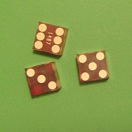
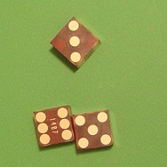
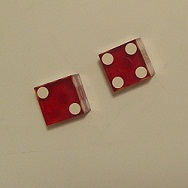
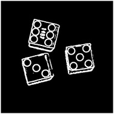
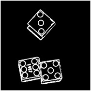
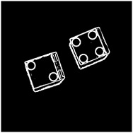
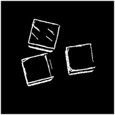
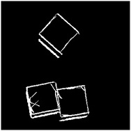
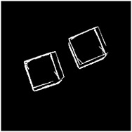

Computer Vision
| Course: | CSC 508 - Computer Vision (California Lutheran University) |
| Instructor: | Craig Reinhart |
| Project: | Pip Counting for Dices |
| Language: | Java |
The goal is to design a computer vision system which reports the pip count of upward faces for dices in a given picture.
|  |  |  |
| 14 | 14 | 6 |
First, Sobel operator is applied to detect edges.
|  |  |  |
Next, Hough Transform is used to find straight lines.
|  |  |  |
Then it analyzes orientation of these straight lines to find squares. The image in each square is compared with several pre-generated patterns. It assumes the pop count of the best matched pattern as the pop count of the die.